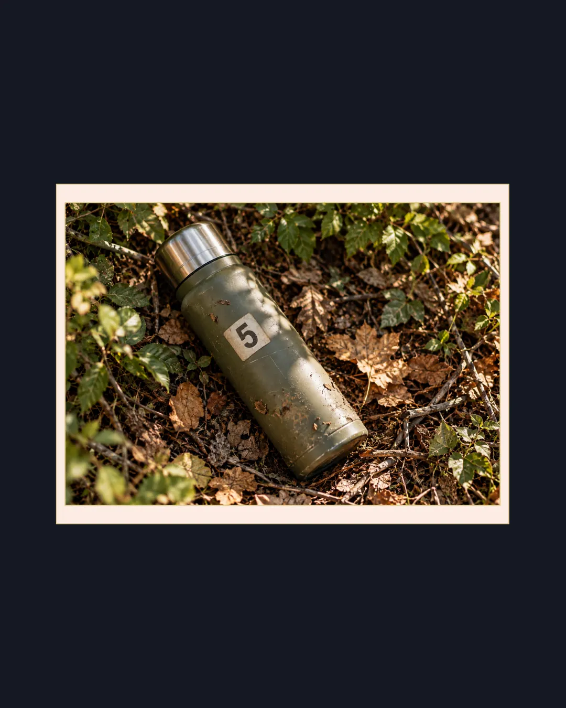
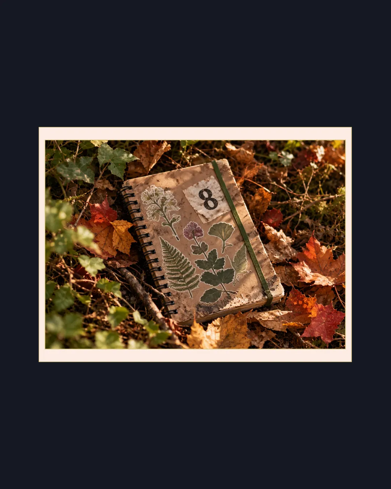
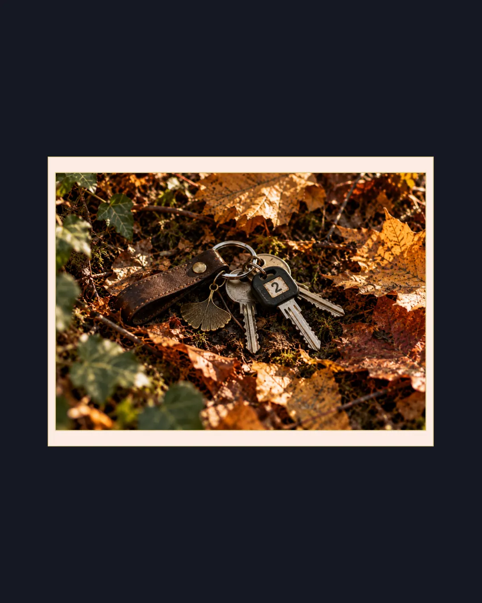
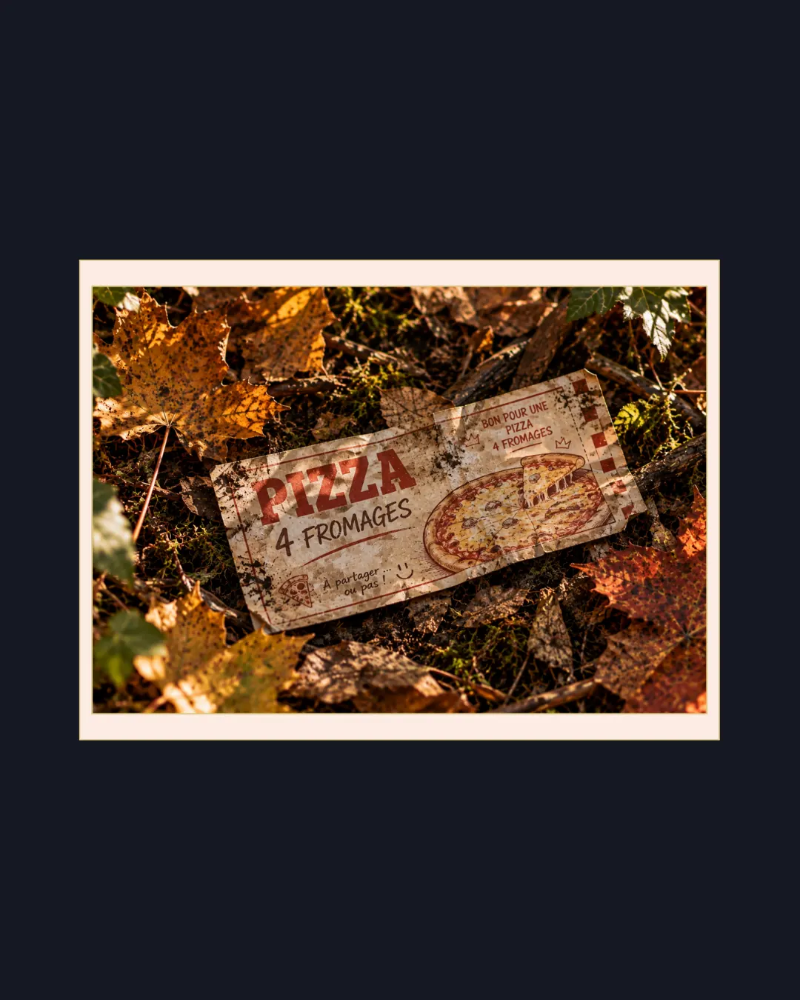
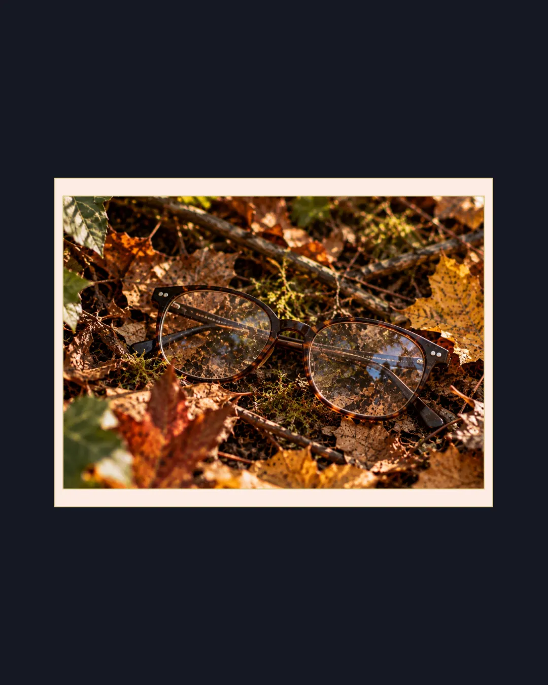

Vous venez de tomber sur un sac qui ne semble pas être à sa place. Cliquez sur « Voir » pour faire défiler son contenu.
Certains objets portaient un chiffre. Dans l'ordre où vous les avez vus, ils forment un nombre à quatre chiffres.
5824
Vous ne savez pas encore à quoi il sert. Gardez-le.
Suivez le chemin indiqué pour poursuivre l'enquête
Rendez-vous sur place, puis scannez le QR code de la borne avec ce bouton.
Raccourci de testSuivez le chemin indiqué pour poursuivre l'enquête
Rendez-vous sur place, puis scannez le QR code de la borne avec ce bouton.
Raccourci de testSur l'affichette, à côté du QR code, se trouve un nombre à quatre chiffres. Saisissez-le.
Dites-nous ce qui ne va pas, l'équipe est prévenue tout de suite.
Inutile d'indiquer votre nom ou votre numéro : un membre de l'équipe vient vers vous.